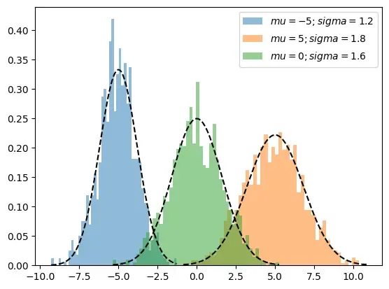
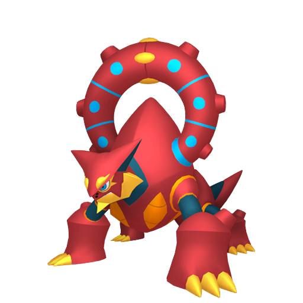
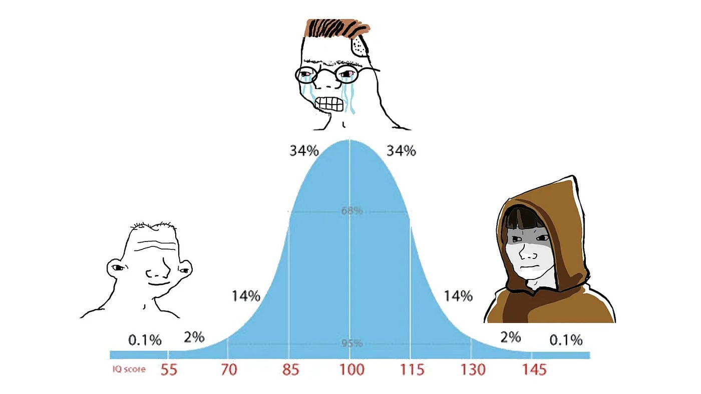
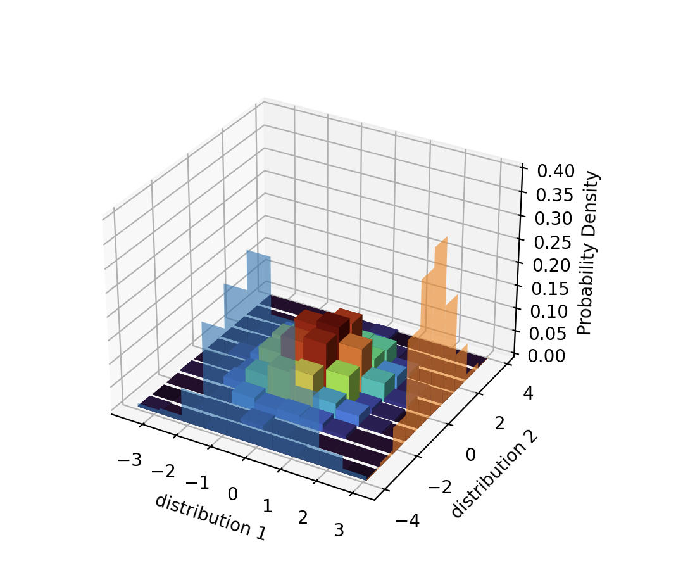
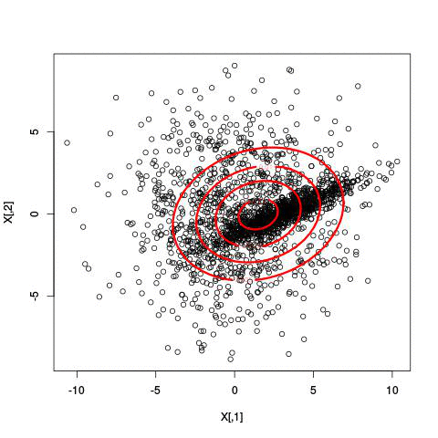
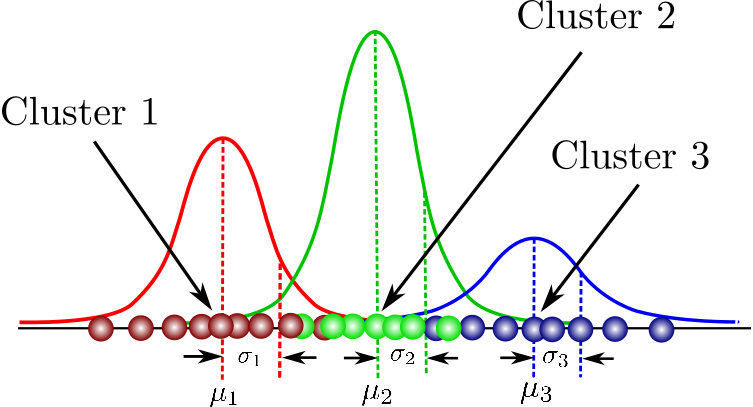
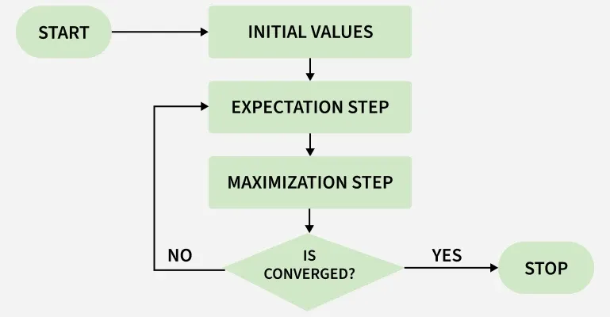
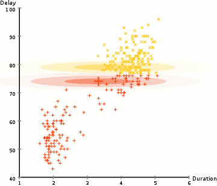

Previously, Pikachu was trying to cluster Pokemon by their types. That works good if a Pokemon has one type. However, dual typing exists. Thus assigning to one cluster or hard clustering is actually incorrectly categorizing the Pokemon. Instead, we can use soft assignment to assign problability to each of the clusters. Pikachu can achieve this using a Gaussian Mixture Model (GMM). Note that for a few months, Pikachu is going on vacation and will be back. So for now, no more Pikachu.

Also called a GMM, a gaussian mixture model solve the problem of assigning one cluster group. Sometimes, a datapoint (like a Pokemon) is in between or in reality a mixture (40% - 60%) of a cluster. This "in-between"-ness membership of multiple clusters based on probability is called soft clustering.
The idea first revolves around a guassian or normal distribution: $$ \mathcal{N}(\mu, \sigma) = \frac{1}{\sqrt{2\pi \sigma^2}} \exp \left( \frac{(x - \mu)^2}{2\sigma^2} \right) $$ This is the classic bell curve shape you might have seen. Here is an example (meme):

The multivariate normal distribution is given by $\Sigma$, the covariance matrix: $\mathcal{N}(\mu, \Sigma)$. Formula is the same otherwise.

The covariance matrix's diagonals (variance) tell us the alignment with the respective axis. The off-diagonals (covariance) tells us the rotation.
The idea is that datapoints belong to gaussian clusters. We can initialize random clusters (random $\mu$, covariance as identity matrix). However, we need to constantly update our cluster positions similar to K-means. This requires us to maximize the log-likelihood of each datapoint within a guassian. The result will be responsibilities of each gaussian for the maximization of log-likelihood for each datapoint.

I'll walk through the idea below so you can get some intuiton: Suppose that $k = 3$: $$ \begin{aligned} P(x | \theta) &= \pi_0 f(x | \mu_0, \sigma_0) + \pi_1 f(x | \mu_1, \sigma_1) + \pi_2 f(x | \mu_2, \sigma_2) \\ &= \pi_0 \mathcal{N_0} + \pi_1 \mathcal{N_1} + \pi_2 \mathcal{N_2} \end{aligned} $$ $\pi_i$ represents the responsibility of each guassian, $f(x | \mu_i, \sigma_i) = \mathcal{N}(\mu, \sigma)$. To reiterate, $\pi_0 f(x | \mu_0, \sigma_0)$ simply means the responsibility of guassian number 0 or $\pi_0 \mathcal{N_0}$.
$\sum_i^n \pi_i = 1$. This makes sense because each guassian contributes a share of responsibility to the ultimate clustering assignment.
Let's rewrite this: $$ \begin{aligned} P(x | \theta) &= \pi_0 \mathcal{N_0} + \pi_1 \mathcal{N_1} + \pi_2 \mathcal{N_2} \\ &= z_0 + z_1 + z_2 \\ &= P(z_0)P(x | z_0) + P(z_1)P(x | z_1) + P(z_2)P(x | z_2) \\ &= \sum_i^K P(z_i)P(x | z_i) = \sum_i^K P(x, z_i) \end{aligned} $$ Where $$ \pi_i = p(z_i), \ \mathcal{N_i} = P(x | z_i) $$ And that is what GMM is: $$ p(x) = \pi_0 \mathcal{N}(X | \mu_0, \sigma_0) + \pi_1 \mathcal{N}(X | \mu_1, \sigma_1) + \cdots + \pi_k \mathcal{N}(X | \mu_k, \sigma_k) $$

Let $\tau$ be the responsibility matrix which is the answer. It contains all the assignment probabilities to each category. This can be represented by $\sum_i^K P(z_i | x)$. This literally says: what is the probability of datapoint $x$ being in the gaussian $z_i$? In otherwords, what is the responsibility of that gaussian. By bayes, we can write (using the same substitutions above): $$ P(z_i | x) = \frac{P(x | z_i) P(z_i)}{P(x_i)} = \frac{\mathcal{N_i} \pi_i}{\pi_0 \mathcal{N_0} + \pi_1 \mathcal{N_1} + \pi_2 \mathcal{N_2}} = \frac{\mathcal{N_i} \pi_i}{\sum_i^K{\pi_i \mathcal{N}_i}} $$
Optimization is done through the EM algorithm. The E step is the expectation and M step is the maximization. This basically takes our original random guess and optimizes it. We can think of this like chess.

We first need to evaluate our position. That means we need to calculate the current responsibilities based on the available parameters. $$ \tau(z_k) = \frac{\pi_k \mathcal{N_k}(x | \mu_k, \Sigma_k)}{\sum_j^K{\pi_j \mathcal{N}(\mu_j, \Sigma_j)}} $$
Then we can make an estimated guess about where to move next (maximization). Update the following: $$ \mu_k = \frac{\sum_{n=1}^N \tau(z_{nk}) x_n}{\sum_{n=1}^N \tau(z_{nk})} $$ $$ \Sigma_k = \frac{\sum_{n=1}^N \tau(z_{nk})(x_n - \mu_k)(x_n - \mu_k)^T}{\sum_{n=1}^N \tau(z_{nk})} $$ $$ \pi_k = \frac{1}{N} \sum_{n=1}^N \tau(z_{nk}) $$

Evaluate the log likelihood using: $$ \ln p(X | \mu, \Sigma, \pi) = \sum_{n=1}^N \ln \left( \sum^K_{k=1} \pi_k \mathcal{N}(x_n | \mu_k, \Sigma_k) \right) $$ If we haven't converged, go back to E-step.
At the end, we are left with the final / updated versions of:
Soft clustering provides more flexibility to normal hard clustering. This allows us to categorize Pokemon correctly using the EM algorithm. No Pikachu because he is on break. Ok BYE.